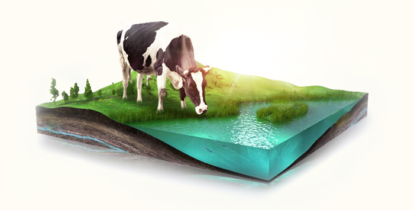

奶源是奶粉的源头，
是制作婴幼奶粉最主要的原料，决定着奶粉的质量。如果奶源质量不好，用什么工艺和方法都难以弥补。
传统的奶源供应中，奶农自己养奶、挤奶、上交企业，因养殖条件差，鲜奶质量不达标，于是就有了不法分子在鲜奶中非法添加化学物质的恶劣行径。
然而，在各种奶粉“安全门”事件中，飞鹤均独善其身，55年保持着零安全事故记录。
这其中，有什么秘诀？
为了保证奶源的安全和品质，飞鹤做出了不懈的努力。
飞鹤花费十年时间，斥巨资打造了全产业链，建立了自己的牧场，牧草种植、奶牛育养、挤奶等环节均得到规范化管理。

飞鹤牧场位于北纬47度的黄金奶源带。
这里有着肥沃的黑土地，不需施肥就能滋养优质牧草，纯天然无污染。
奶牛的一日三餐都经过专业科学配比，营养又均衡，气味酸香、柔软多汁、适口性好、营养丰富，奶牛们吃到根本停不下来。
牧场临近二克山火山带，这里的水是优质的天然弱碱性苏打水，让奶牛的消化系统更健康，产奶质量就更棒。
飞鹤专属牧场的隔壁，就是世界级自然保护区——扎龙湿地，这里日照充沛、水质清纯、苇草肥美，空气新鲜，连对环境要求极高的丹顶鹤也生活在这里。
这里的环境，简直就是奶牛的“世外桃源”，堪称“牛间仙境”。
宽大舒适的牛棚，一年四季温度适宜。
一牛一卧的私人空间里，牧场工作人员每天为奶牛清理房间、松软床铺、播放轻音乐、聊天、按摩等等。
奶牛们在这里享受着无微不至的呵护。
飞鹤精选名牛——荷斯坦奶牛，
不仅品种纯正、产奶品质也是杠杠的！
每头奶牛都拥有自己的身份标记——耳环，结合电子身份识别系统，监测奶牛们的身体状况和奶质。